Candidate List 20260815Last night — ZTF: 3,771 passed basic cuts (193 young) · LSST: 0 passed basic cuts (0 young)Previous Day Next Day
Section 1: New Sources (age<1d) Section 2: Old (1-5d) sources observed last nightplaceholder
Section 1: New Afterglow/FBOT Cands Last Night (3)
1. [ZTF] ZTF26aboedqu (FBOT?) [Back to Top] [Share] [Trigger Swift] [Fritz Alert] [Fritz Source] [Lasair]RA, Dec: 280.71583, 21.07498 18h42m51.80s, 21d 4m29.93sGalactic (l, b): 50.99533, 11.24649 ext(g-r) = 0.229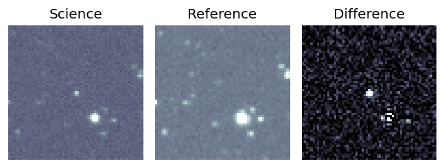
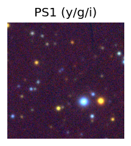

TESS: Sectors [ 26 40 53 54 80 118 119]
SDSS (<15 kpc):Found SDSS phot-z: z=0.11; peak abs mag = -19.72
PS1: 1 source in 3 arcsec Closest: d = 0.16 arcsec photoz=0.94+/-0.85 peak abs mag = -25.20
LegacySurvey: 0 sources in 3 arcsec
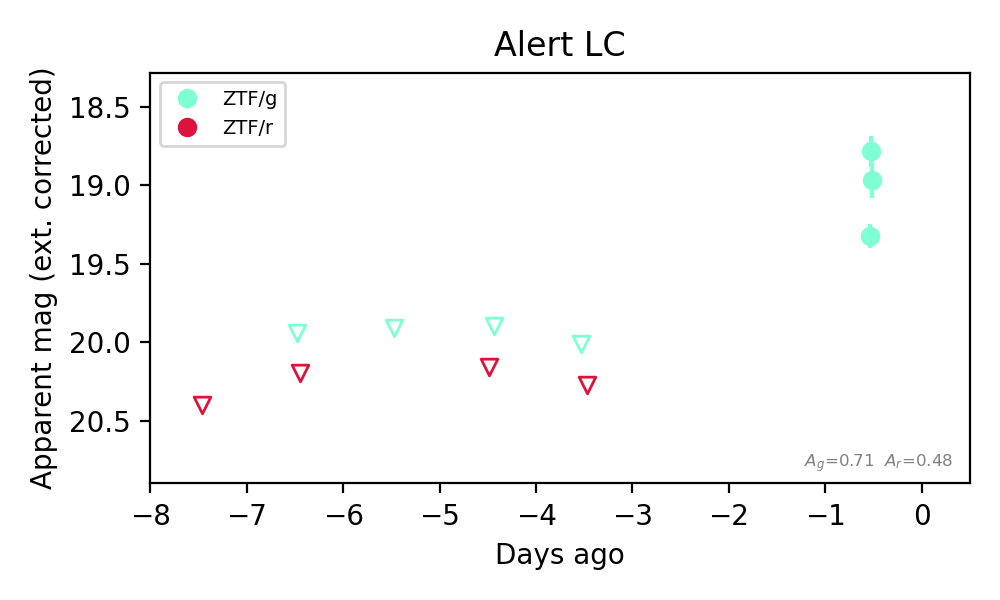
Rise Rate:
g: 33.0 mag/day
Fade Rate:
2. [ZTF] ZTF26abohdvv (FBOT?) [Back to Top] [Share] [Trigger Swift] [Fritz Alert] [Fritz Source] [Lasair]RA, Dec: 324.13424, -0.34616 21h36m32.22s, 0d-20m-46.16sGalactic (l, b): 54.39079, -36.14588 ext(g-r) = 0.054


TESS: Sectors [55 82]
SDSS (<15 kpc):Found SDSS phot-z: z=0.25; peak abs mag = -20.91
PS1: 0 sources in 3 arcsec
LegacySurvey: 1 sources in 3 arcsec Closest: d = 0.48 arcsec, 228.3 deg (east of north) photoz=0.1 (68% bounds 0.07, 0.12), type=SER peak abs mag (ext. corrected) = -18.86 (68% bounds -18.01, -19.16)

Extinction-corrected gr color:
From alerts: -0.49 +/- 0.24 mag
Extinction-corrected gi color:
From alerts: -0.8 +/- 0.28 mag
Extinction-corrected ri color:
From alerts: -0.31 +/- 0.33 mag
Consistent with synchrotron, g-r>0!
Rise Rate:
g: 0.27 mag/day
Fade Rate:
3. [ZTF] ZTF26aboierm (Afterglow?FBOT?) [Back to Top] [Share] [Trigger Swift] [Fritz Alert] [Fritz Source] [Lasair]RA, Dec: 10.82279, 41.44748 0h43m17.47s, 41d26m50.93sGalactic (l, b): 121.29239, -21.39833 ext(g-r) = 0.388


TESS: Sectors [17 57 84]
PS1: 1 source in 3 arcsec Closest: d = 2.14 arcsec photoz=0.41+/-0.02 peak abs mag = -25.92
LegacySurvey: 0 sources in 3 arcsec

Extinction-corrected gr color:
From alerts: 0.01 +/- 0.05 mag
Consistent with synchrotron, g-r>0!
Rise Rate:
g: 0.42 mag/day
r: 0.95 mag/day
Fade Rate:
Section 2: Older Sources Observed Last Night (11)
0. [ZTF] ZTF26abnibuo (Afterglow?FBOT?) [Back to Top] [Share] [Trigger Swift] [Fritz Alert] [Fritz Source] [Lasair]RA, Dec: 269.70912, 41.95754 17h58m50.19s, 41d57m27.15sGalactic (l, b): 68.50314, 27.09279 ext(g-r) = 0.037


TESS: Sectors [ 25 26 40 52 53 54 74 79 80 117 118 119]
SDSS (<15 kpc):Found SDSS phot-z: z=0.12; peak abs mag = -19.80
NED photo-z only: WISEA J175850.15+415727.3 (G, 0.4″) z=0.0684 [zflag PUN] — not used for peak abs mag
PS1: 0 sources in 3 arcsec
LegacySurvey: 1 sources in 3 arcsec Closest: d = 0.34 arcsec, 291.0 deg (east of north) photoz=0.08 (68% bounds 0.06, 0.09), type=SER peak abs mag (ext. corrected) = -18.84 (68% bounds -18.3, -19.15)

Extinction-corrected gr color:
From alerts: 0.3 +/- 0.18 mag
Consistent with synchrotron, g-r>0!
Rise Rate:
g: 0.44 mag/day
r: 0.51 mag/day
Fade Rate:
1. [ZTF] ZTF26abnktnq (Afterglow?FBOT?) [Back to Top] [Share] [Trigger Swift] [Fritz Alert] [Fritz Source] [Lasair]RA, Dec: 36.63538, 31.93764 2h26m32.49s, 31d56m15.49sGalactic (l, b): 145.45799, -26.74061 ext(g-r) = 0.079


TESS: Sectors [18 58 85]
PS1: 0 sources in 3 arcsec
LegacySurvey: 1 sources in 3 arcsec Closest: d = 0.12 arcsec, 142.9 deg (east of north) photoz=1.15 (68% bounds 0.61, 1.4), type=REX peak abs mag (ext. corrected) = -27.94 (68% bounds -26.26, -28.47)

Extinction-corrected gr color:
From alerts: -0.03 +/- 0.06 mag
Consistent with synchrotron, g-r>0!
Rise Rate:
g: 1.11 mag/day
r: 3.53 mag/day
Fade Rate:
g: 0.35 mag/day
r: 0.32 mag/day
2. [ZTF] ZTF26abnllhn (Afterglow?) [Back to Top] [Share] [Trigger Swift] [Fritz Alert] [Fritz Source] [Lasair]RA, Dec: 15.97966, -10.67657 1h 3m55.12s, -10d-40m-35.65sGalactic (l, b): 133.65177, -73.28802 ext(g-r) = 0.033


TESS: Sectors [ 3 30 97]
NED host (10 arcsec):Found WISEA J010354.99-104041.5 (G, 6.2″); NED spec-z: z=0.1491 [zflag SLS]; peak abs mag = -19.48
PS1: 0 sources in 3 arcsec
LegacySurvey: 1 sources in 3 arcsec Closest: d = 6.25 arcsec, 196.3 deg (east of north) photoz=0.14 (68% bounds 0.14, 0.15), type=SER peak abs mag (ext. corrected) = -19.4 (68% bounds -19.34, -19.45)

Extinction-corrected gr color:
From alerts: 0.1 +/- 0.24 mag
Consistent with synchrotron, g-r>0!
Rise Rate:
g: 0.11 mag/day
r: 0.02 mag/day
Fade Rate:
r: 0.38 mag/day
3. [ZTF] ZTF26abnmogs (FBOT?) [Back to Top] [Share] [Trigger Swift] [Fritz Alert] [Fritz Source] [Lasair]RA, Dec: 257.34297, 47.08176 17h 9m22.31s, 47d 4m54.32sGalactic (l, b): 73.06023, 36.51219 ext(g-r) = 0.031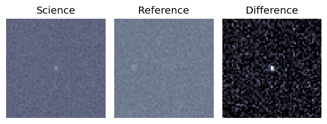
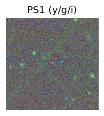
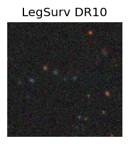
TESS: Sectors [ 24 26 51 52 53 78 79 80 117 118]
PS1: 0 sources in 3 arcsec
LegacySurvey: 1 sources in 3 arcsec Closest: d = 0.20 arcsec, 270.6 deg (east of north) photoz=0.78 (68% bounds 0.38, 1.16), type=REX peak abs mag (ext. corrected) = -23.55 (68% bounds -21.66, -24.59)
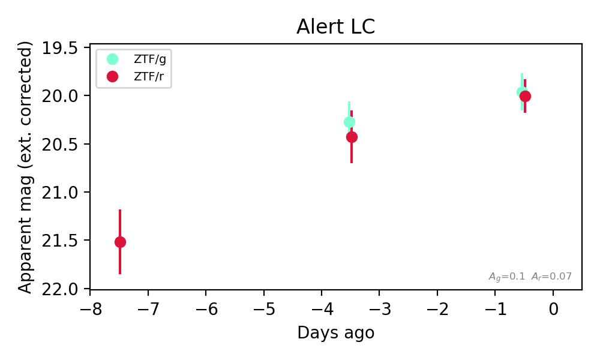
Extinction-corrected gr color:
From alerts: -0.04 +/- 0.26 mag
Consistent with synchrotron, g-r>0!
Rise Rate:
g: 0.1 mag/day
r: 0.21 mag/day
Fade Rate:
4. [ZTF] ZTF26abnslba (FBOT?) [Back to Top] [Share] [Trigger Swift] [Fritz Alert] [Fritz Source] [Lasair]RA, Dec: 38.69561, 37.51866 2h34m46.95s, 37d31m7.18sGalactic (l, b): 144.65596, -20.95512 ext(g-r) = 0.049


TESS: Sectors [18 58 85]
PS1: 1 source in 3 arcsec Closest: d = 0.96 arcsec photoz=0.22+/-0.16 peak abs mag = -21.26
LegacySurvey: 0 sources in 3 arcsec

Extinction-corrected gr color:
From alerts: -0.21 +/- 0.12 mag
Rise Rate:
g: 0.33 mag/day
r: 0.29 mag/day
Fade Rate:
5. [ZTF] ZTF26aboghvp (FBOT?) [Back to Top] [Share] [Trigger Swift] [Fritz Alert] [Fritz Source] [Lasair]RA, Dec: 335.43152, 38.09707 22h21m43.57s, 38d 5m49.46sGalactic (l, b): 93.10062, -15.95326 ext(g-r) = 0.143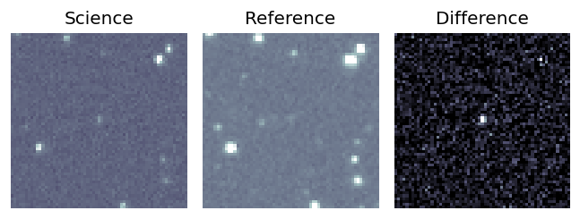
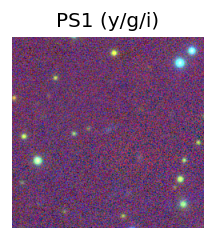

TESS: Sectors [ 16 56 83 121]
SDSS (<15 kpc):Found SDSS phot-z: z=0.45; peak abs mag = -22.18
PS1: 1 source in 3 arcsec Closest: d = 0.62 arcsec photoz=0.57+/-0.20 peak abs mag = -22.78
LegacySurvey: 0 sources in 3 arcsec
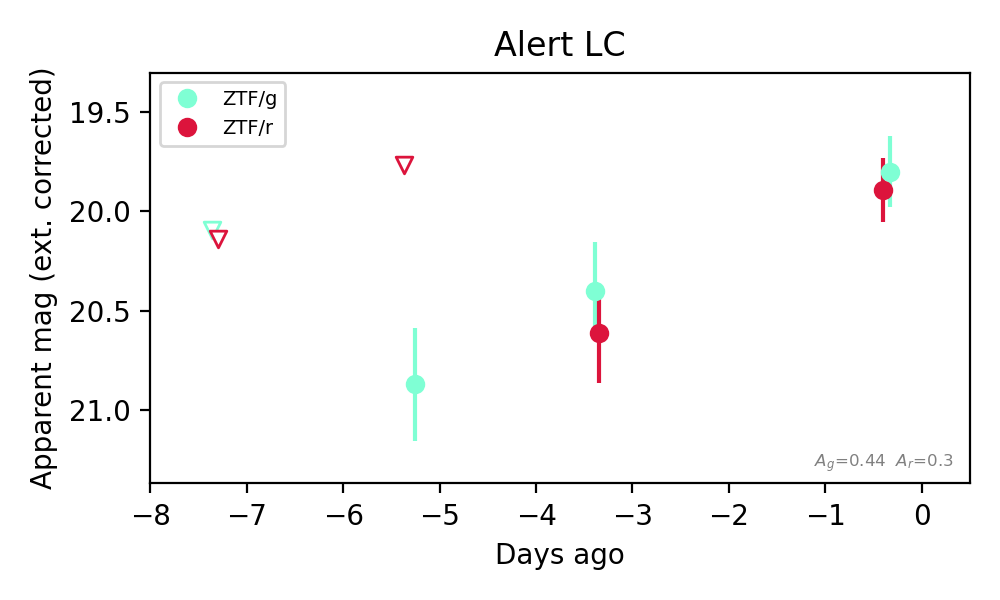
Extinction-corrected gr color:
From alerts: -0.09 +/- 0.24 mag
Consistent with synchrotron, g-r>0!
Rise Rate:
g: 0.21 mag/day
r: 0.25 mag/day
Fade Rate:
6. [ZTF] ZTF26abohzjc (FBOT?) [Back to Top] [Share] [Trigger Swift] [Fritz Alert] [Fritz Source] [Lasair]RA, Dec: 1.80065, 3.07906 0h 7m12.15s, 3d 4m44.63sGalactic (l, b): 101.76535, -57.96325 WARNING: 2.11 deg from ecliptic plane ext(g-r) = 0.023


TESS: Sectors [42 70]
SDSS (<15 kpc):Found SDSS phot-z: z=0.12; peak abs mag = -18.84
PS1: 0 sources in 3 arcsec
LegacySurvey: 1 sources in 3 arcsec Closest: d = 1.48 arcsec, 348.1 deg (east of north) photoz=0.3 (68% bounds 0.11, 0.67), type=EXP peak abs mag (ext. corrected) = -21.12 (68% bounds -18.78, -23.16)

Extinction-corrected gr color:
From alerts: -0.07 +/- 0.16 mag
Extinction-corrected gi color:
From alerts: 0.73 +/- 99 mag
Extinction-corrected ri color:
From alerts: 0.72 +/- 99 mag
Consistent with synchrotron, g-r>0!
Rise Rate:
g: 0.27 mag/day
r: 0.21 mag/day
Fade Rate:
7. [ZTF] ZTF26aboiggk (Afterglow?) [Back to Top] [Share] [Trigger Swift] [Fritz Alert] [Fritz Source] [Lasair]RA, Dec: 27.31387, 60.58154 1h49m15.33s, 60d34m53.55sGalactic (l, b): 129.97676, -1.49695 ext(g-r) = 0.995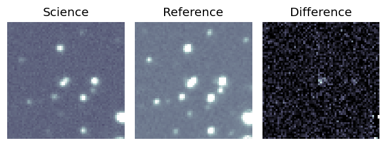
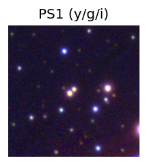

TESS: Sectors [58 85]
PS1: 0 sources in 3 arcsec
LegacySurvey: 0 sources in 3 arcsec
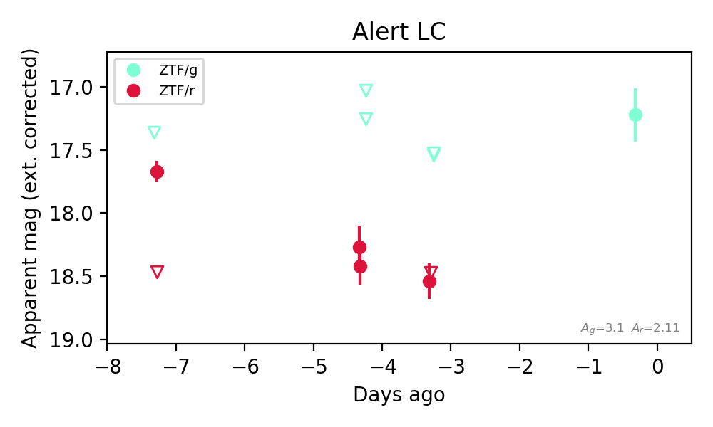
Extinction-corrected gr color:
From alerts: -1.0 +/- 99 mag
Rise Rate:
r: 0.47 mag/day
Fade Rate:
r: 0.22 mag/day
8. [ZTF] ZTF26abojoxk (Afterglow?) [Back to Top] [Share] [Trigger Swift] [Fritz Alert] [Fritz Source] [Lasair]RA, Dec: 27.32716, 31.81436 1h49m18.52s, 31d48m51.71sGalactic (l, b): 137.04529, -29.46645 ext(g-r) = 0.046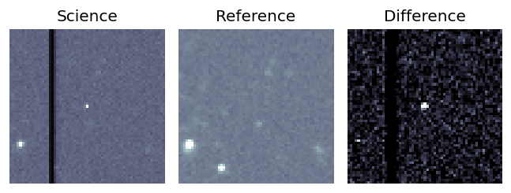
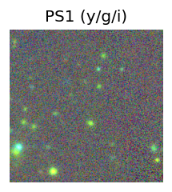
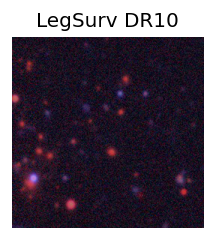
TESS: Sectors [17 58]
SDSS (<15 kpc):Found SDSS phot-z: z=0.64; peak abs mag = -25.00
PS1: 0 sources in 3 arcsec
LegacySurvey: 1 sources in 3 arcsec Closest: d = 4.09 arcsec, 120.1 deg (east of north) photoz=1.09 (68% bounds 0.88, 1.28), type=REX peak abs mag (ext. corrected) = -26.4 (68% bounds -25.84, -26.85)
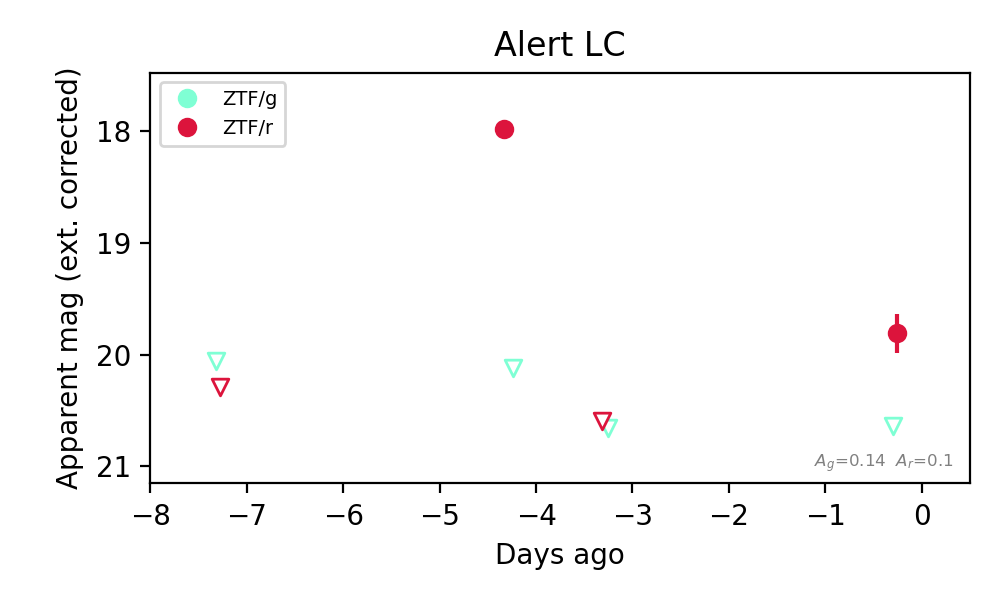
Extinction-corrected gr color:
From alerts: 0.83 +/- 99 mag
Rise Rate:
r: 0.79 mag/day
Fade Rate:
r: 2.57 mag/day
9. [ZTF] ZTF26abojwev (Afterglow?) [Back to Top] [Share] [Trigger Swift] [Fritz Alert] [Fritz Source] [Lasair]RA, Dec: 35.44406, 25.32321 2h21m46.58s, 25d19m23.57sGalactic (l, b): 147.44634, -33.2122 ext(g-r) = 0.077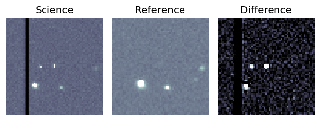
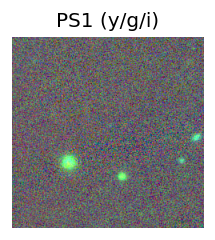
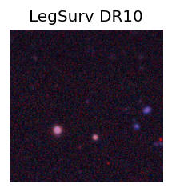
TESS: Sectors [18 42 43 58 70 71 85]
PS1: 0 sources in 3 arcsec
LegacySurvey: 1 sources in 3 arcsec Closest: d = 1.91 arcsec, 347.8 deg (east of north) photoz=1.04 (68% bounds 0.92, 1.19), type=REX peak abs mag (ext. corrected) = -25.33 (68% bounds -25.0, -25.71)
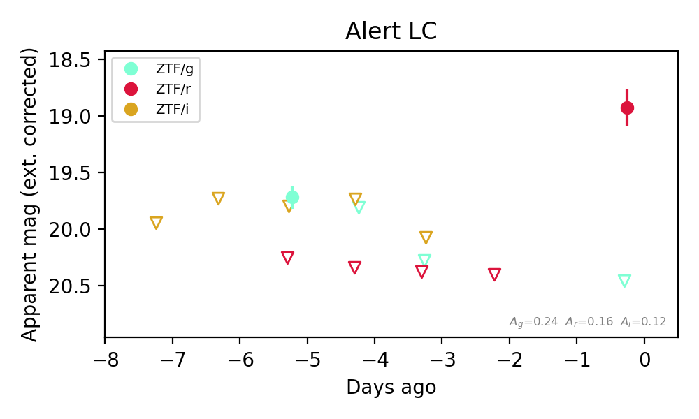
Extinction-corrected gr color:
From alerts: 1.53 +/- 99 mag
Extinction-corrected gi color:
From alerts: -0.08 +/- 99 mag
Rise Rate:
g: 0.06 mag/day
r: 0.75 mag/day
Fade Rate:
g: 0.28 mag/day
10. [ZTF] ZTF26abokrkn (Afterglow?) [Back to Top] [Share] [Trigger Swift] [Fritz Alert] [Fritz Source] [Lasair]RA, Dec: 79.83471, 43.27225 5h19m20.33s, 43d16m20.09sGalactic (l, b): 165.09745, 3.38861 ext(g-r) = 0.709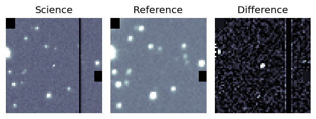
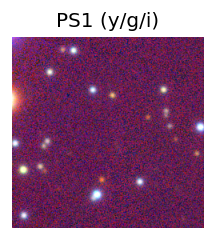

TESS: Sectors [19 59 73 86]
PS1: 0 sources in 3 arcsec
LegacySurvey: 0 sources in 3 arcsec
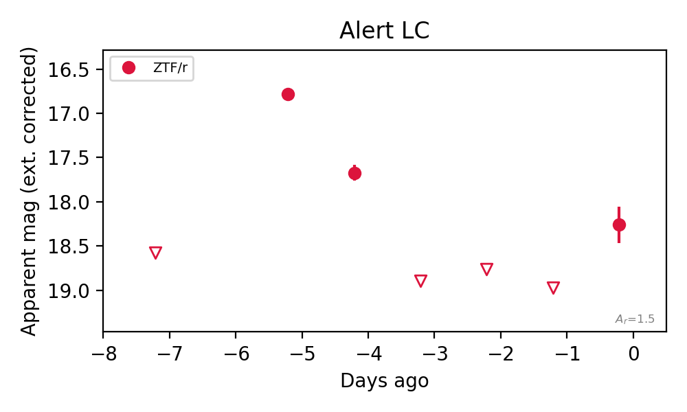
Rise Rate:
r: 0.9 mag/day
Fade Rate:
r: 1.22 mag/day